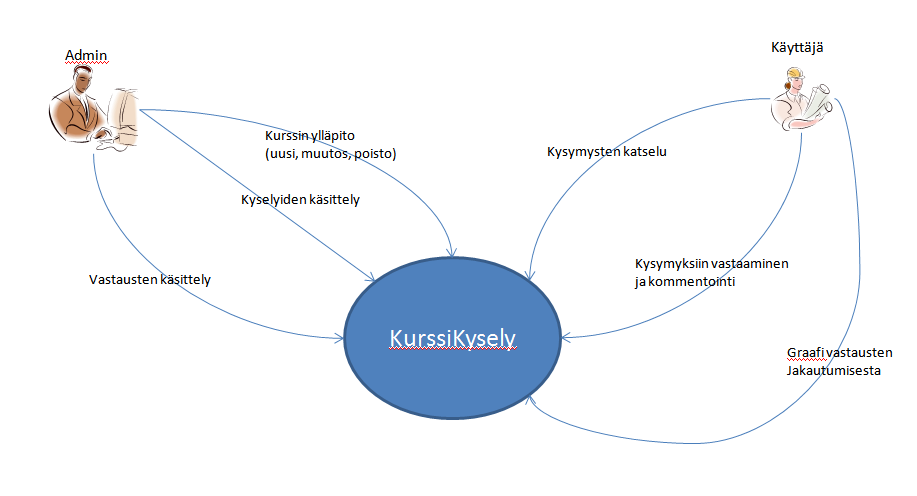
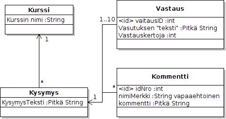
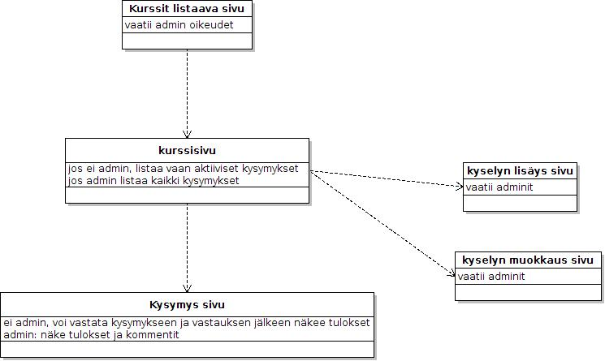
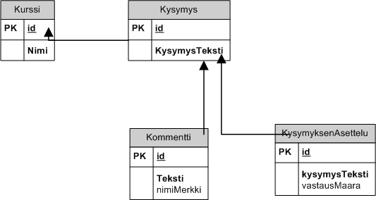

SuunnitteluDokumentti
Table of Contents
1 JOHDANTO (1)
1.1 Järjestelmän tarkoitus
-Tiivis kuvaus siitä mistä on kyse. -Millaisen toiminnan tukemiseen järjestelmä on tarkoitettu. -Mitkä ovat järjestelmän tavoitteet. -Nämä tiedot saa yleensä tehtäväkuvauksesta.
Järjestelmän käyttötarkoituksena on toteuttaa esimerkiksi kurssikyselyitä, joihin tässä tapauksessa opiskelijat voivat nopeasti vastata, näin saadaan hyödyllistä tietoa esim. kurssin tehtävien vaikseustasosta. Tavoitteena on toteuttaa järjestelmä, jolla voi kyselyitä, joihin vastaamiseen ei mene yli minuuttia.
1.2 Toimintaympäristö
Missä laite ja ohjelmistoympäristössä järjestelmän on tarkoitus toimia.
1.3 Rajaukset
Mahdolliset rajaukset koskien määrittelyn, suunnittelun ja toteutuksen laajuutta. Kaikissa, joissa postgresql tietokanta ja rails:ille sopiva ympäristö olemassa. ruby 1.9.2.138 Rails 3.2.2
1.4 Toteutusympäristö
1.5 Missä ympäristössä työ toteutetaan.
Ruby on rails kielellä ja deployaus herokuun.
2 Yleiskuva järjestelmästä (2)
2.1 Sidosryhmäkaavio

2.2 Käyttäjäruhmät
Kursilainen (ei autentikointia) tarkoitetaan kurssilaista, jolle ehdotetaan kyselyyn vastaamista.
Admin on henkilö, jolla oikeudet luoda uusia kursseja ja kysymyksiä, sekä lukea kommentteja
3 Käyttätapaukset (3)
Pääsivulla / cources -sivulla Admin On kaikista kursseista listaus -Voi luoda uuden kurssin -voi poistaa kurssin -voi siirtyä katselemaan kursseja
Kurssin sivulla / cources/:id Admin -Näkee kaikki kyselyt -Voi luoa uusia kyselyitä -Voi poistaa kyselyitä, esim. jos kysymyksessä on virheitä -Merkkaa mihin kysymyksiin vastaaminen mahdollista
Peruskäyttäjä/Anonyymi -Näkee kysymykset, joihin vastaaminen mahdollista
Kysymyssivulla / cources/:id/:kysID Admin -Näkee vastaukset -Voi vastata kysymykseen -Näkee vastauksen jälkeen jonkinasteisen graafin vastausten jakautumisesta -Näkee kysymykseen liittyvät kommentit Peruskäyttäjä/Anonyymi -Voi vastata kysymykseen -Voi kommentoida kysymystä -Näkee vastauksen jälkeen jonkinasteisen graafin vastausten jakautumisesta
4 Järjestelmän tietosisältö (4)

5 Käyttöliittymän hahmotelma (5)

6 Relaatiotietokantakaavio (6)

Date: 2012-03-27 12:31:21 EEST
HTML generated by org-mode 6.33x in emacs 23